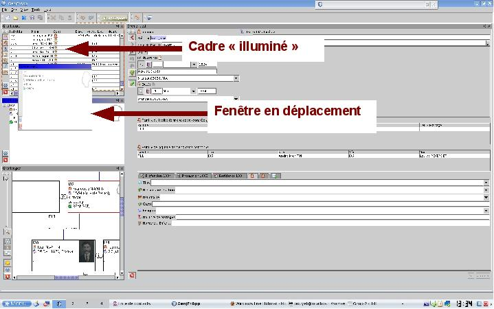

Travailler avec les fenêtres et onglets
La gestion des différentes vues est une avancée importante dans
l'évolution du logiciel.
Il est possible maintenant avec GenjFr d'avoir trois types de visualisation,
d'arrangement des fenêtres.
Ainsi, vous pouvez avoir un système de fenêtres flottantes libres.
Les différentes vues peuvent aussi être affichées
(comme dans Firefox) dans des onglets. Enfin ces vues peuvent être
"amarrées"
entre elles (c'est le "docking" en anglais informatique) et occuper
des emplacements d'écrans, conservés à l'enregistrement.
Mieux encore, ces
trois possibilités peuvent coexister entre elles.
Examinons le fonctionnement de ces fonctions, après avoir ouvert
bien sûr, un fichier GEDCOM en premier !
- Disposition
en onglets : quand vous choisissez une vue dans le menu "Vues",
celle-ci est ouverte par défaut dans un onglet. C'est le
bord supérieur de cet onglet qui permet toutes les
manipulations !

- Fenêtres
libres et indépendantes : Si vous cliquez droit sur cet
en-tête d'onglet, vous pouvez "détacher" cette fenêtre, la promener et la disposer
n'importe où sur l'écran : elle restera flottante dans
indépendante.
- Fenêtres
"amarrées" ("docking") : Si vous cliquez et tirez cet
en-tête d'onglet, vous pouvez "promener" cette fenêtre en
divers points de l'écran,
vous voyez alors "s'allumer"
en-dessous des emplacements pré-défini : la colonne de
gauche, la moitié supérieure de la colonne de gauche, la
moitié inférieure de cette colonne ; l'emplacement droit
entier, la partie supérieure droite, la partie supérieure
gauche ; vous pouvez alors relâcher
cette fenêtre à l'emplacement souhaité. S'il
ne vous plaît pas, vous
re-cliquez et recommencez pour choisir un autre emplacement

- fenêtres
"escamotées" : dans l'angle droit du bord
supérieur de l'onglet, une flèche gauche ou verticale
vous permet de minimiser la
fenêtre,
"l'escamoter" contre un bord. il suffit de promener la sourice dessus
ensuite pour la voir reprendre sa place.
Vous pouvez donc décider de mixer les vues : d'en avoir une, deux ou trois en onglets et trois, quatre, cinq en "amarrage", voire une autre en libre... N'oubliez pas de sauvegarder à la fin pour retrouver votre disposition au démarrage... voici deux exemples de vues vous montrant la diversité des dispositions de travail possibles...


Nouveauté :
Une vue supplémentaire a été ajoutée dans GenjFr : une vue "Web" : elle permet d'afficher des sites internet (pratique pour Geneanet ou site d'AD...). Elle se manipule et minimise comme les autres vues...

Avec cette vue de travail, on peut facilement travailler sur sa généalogie en effectuant dans la même fenêtre ses recherches sur Geneabank.